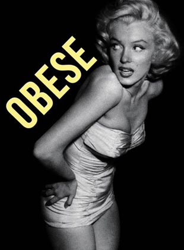
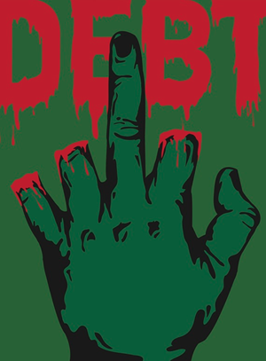

FIRST THINGS FIRST
Designed after the First Things First manifesto. This poster is meant to show my take on the manifesto. The manifest states that working for something you don't believe in is basically selling out, nad the worst thing you can do. I also believe this, which is why I depicted how big buisness can brainwash your mind to twist how you create if you let them.
WORD AND IMAGE
This poster was created for a class sophomore year at MassArt to show how an image and a word can come together and create a third meaning that is not present on the surface. I paired the word "obese" with a picture of Marilyn to show the struggle that many women have everyday with their own body image.
GLOBAL FINANCIAL CRISIS
This poster was designed for the Bolivian Benninal, where the theme was the global financial crisis. I tried to show the feeling one gets when they are in debt and can not recieve a loan due to the fact that they have already been given out to people who can not pay back the bank. It really is like debt is "costing an arm and a leg."